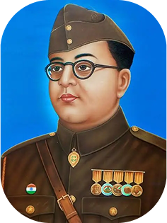
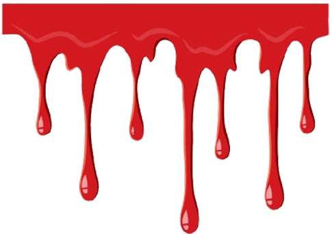

Netaji Subhas Chandra Bose was an Indian nationalist leader who played a pivotal role in India's struggle for independence against British rule. Born on January 23, 1897, in Cuttack, Odisha, Bose was a brilliant student, earning a degree from the University of Calcutta and later going to England to prepare for the Indian Civil Services (ICS). However, his passion for India's freedom led him to abandon his ICS aspirations and join the Indian National Congress (INC). Bose quickly rose through the ranks of the INC, becoming known for his radical views and his advocacy for complete independence from British rule, as opposed to the more moderate approach favoured by some leaders. He was elected as the President of the INC in 1938 and 1939 but resigned due to differences with Mahatma Gandhi and other leaders over their non-violent approach.